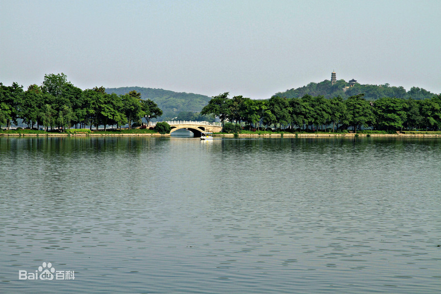
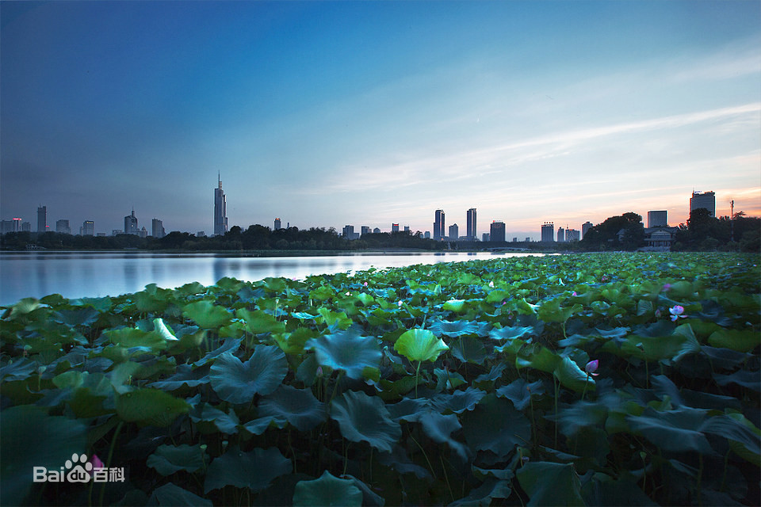
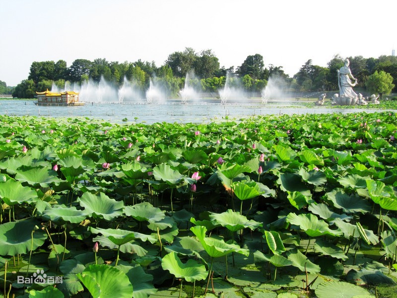
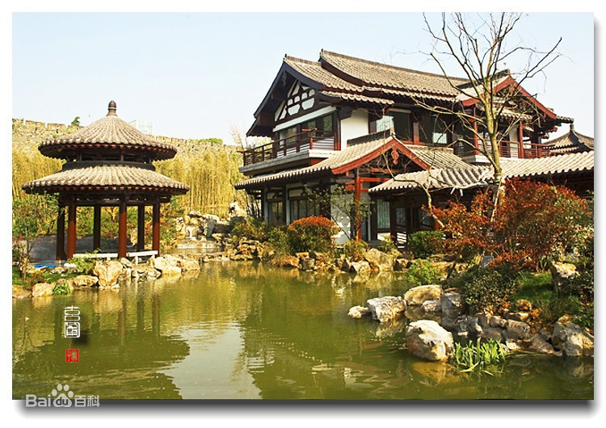
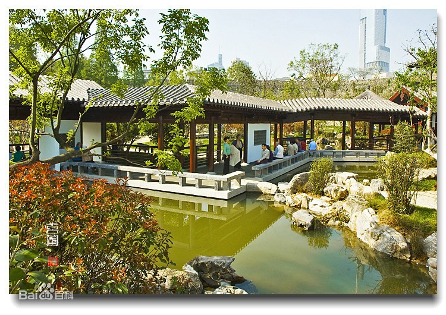

- 
- 
- 
- 
- 
玄武湖
简介
成人票：4元/人；学生票：3元/人；儿童票：2元/人
玄武湖位于南京市玄武区，东枕紫金山、西靠明城墙、北邻南京站、南倚覆舟山，是江南地区最大的城内公园，也是中国最大的皇家园林湖泊、仅存的江南皇
家园林，被誉为“金陵明珠”，又称后湖、北湖。
玄武湖的人文历史最早可追溯至先秦时期；六朝时，成为皇帝操阅水师的场所，并被辟为皇家园林，南岸建有华林园、乐游苑等皇家
宫苑；北宋时，江宁府尹王安石“废湖还田”，玄武湖因此消失二百多年；元朝时，经过两次疏浚，玄武湖重新出现；明朝时，设为后湖黄册库，系皇家禁地；
清末举办南洋劝业会时，开辟丰润门（今玄武门），玄武湖成为游览区；民国十七年（1928年）8月，玄武湖作为公园正式对外开放。
2005年2月，玄武湖被列为国家AAAA级旅游景区；2008年9月，玄武湖公园被列为国家重点公园；2016年9月，玄武湖被列为国家级水
利风景区；2019年10月，玄武湖荣获“2019中国十大休闲湖泊”称号。

自然风貌
玄武湖湖岸呈菱形，周长约15公里，占地面积502公顷，水面约378公顷，原湖更广。玄武湖西、南两面紧邻明城墙，西以玄武门、南以解放
门为出入口。古代时周长为40里。
玄武湖形似火腿，湖泊分成三大块，北湖（东北湖、西北湖）、东南湖及西南湖，北湖水较浅，西南湖水最深，
东南湖其次，湖内由湖堤、桥梁和道路连通使玄武湖水系完全处于人工控制之中，玄武湖属于浅水湖泊；南北长
2.4km，东西宽2.0km；湖底质较厚，平均达70cm，以细粒粘土为主；主要入湖沟渠有7条，分别是南十里长沟、老
季亭、香料厂、唐家山沟、紫金山沟、岗子村和西家大塘，北部与护城河、金川河相通，南部与珍珠河相接。 玄武
湖盛产鱼虾、菱、藕，水产资源十分丰富，作为南京的“活鱼库”，早在70年代初，就进行了大量的人工淡水养殖，鱼
产量逐年上升。当前玄武湖人工养殖的鱼种有花白鲢、鲤、鲫、鳊，其中花白鲢占80%～90%。1988年产量为440t渔业收入占全湖收入的22.5%。
玄武红莲是源于南京玄武湖的品种。玄武红莲最早成名是在清代中期，当时玄武湖内种植了大片的莲花。玄武湖被列为中国八大观荷胜地之一。
玄武湖植荷历史悠久，六朝时已闻名天下，历中上满湖皆荷，船只能在荷叶里开出的“萦纤一水”中划行。玄武红莲是玄武湖的“当家花旦”，其颜
色比大红稍浅，娇艳动人，是最受游客喜爱的品种之一。
玄武红莲的足迹几乎遍布全国。玄武红莲花瓣更大、色彩更浓艳。为了游客可以亲近玄武红莲，玄武湖设计了一种画舫，专门用来深入荷塘赏荷，
重现“莲动下渔舟”的美景。游客可以在密密匝匝的荷花丛中划船。

.png)
历史背景
玄武湖的历史最早可追溯到距今2220多年前的先秦时期。从公元前221年的先秦到西汉玄武湖分别称作秣陵湖、蒋陵湖。南朝时，玄武湖进入它在历史上
的鼎盛时期。出于帝王都“四神布局”的需要，又由于宋元嘉年间湖中两次出现所谓的“黑龙”，湖名开始改为“玄武”。
从东晋到梁代，玄武湖先后有过昆明湖、饮马塘、练湖、习武湖、练武湖等名称。隋唐以后，玄武湖随着都城的北移，逐渐
衰落下来。
到明朝玄武湖的命运再度发生变化，明洪武十四年（1381年），朱元璋选中玄武湖作为明朝中央政府黄册的存放地，建后湖
黄册库（相当于现在的中央档案馆）。玄武湖从此作为一代禁地，与外界隔绝了二百六十多年。
宋熙宁八年（1075年），江宁府尹王安石奏准宋神宗泄湖得田，玄武湖因此而消失了二百多年，经过元大德五年（1301年）
至正三年（1343年）的两次疏浚，玄武湖才重新在南京版图上出现，但面积已大大缩小，大约只有六朝时期的三分之一了。 进入民国，玄武湖开始有了相
应管理机构，1928年9月又改园名为“五洲公园”。1934年4月，重改“五洲公园”为“玄武湖园”，绿地面积进一步扩大，花卉品种增多，一批建筑如玄武厅、
诺那塔、凇沪抗战纪念塔等先后落成。
解放以后，人民政府对玄武湖进行了大规模的扩建改造，迁出湖民，广植花草，多增景点，面貌全新。现为江苏省文明风景旅
游区示范点、江苏省环境教育基地、南京市三星级公园、南京市青少年绿色环保教育基地。2005年底，景区获得国家AAAA级旅游区称号。 明亡以后，玄武
湖重新对外开放，清朝的皇帝康熙、乾隆均曾来此游历并留下诗词。清朝同治以后，玄武湖有了一些园林建筑，其两江总督曾国藩在梁洲重修湖神庙，并增
建湖心亭、大仙楼、观音阁、赏荷厅。后清大臣左宗棠还修筑了连通孤凄埂与梁洲的长堤，解决了游玄武湖“必自太平门出，令舟而行”的不方便状况。清宣
统元年（1909），端方、张人骏开辟丰润门（今玄武门），筑新堤，扩大湖内绿地，徐绍桢又建陶公亭及湖山览胜楼。